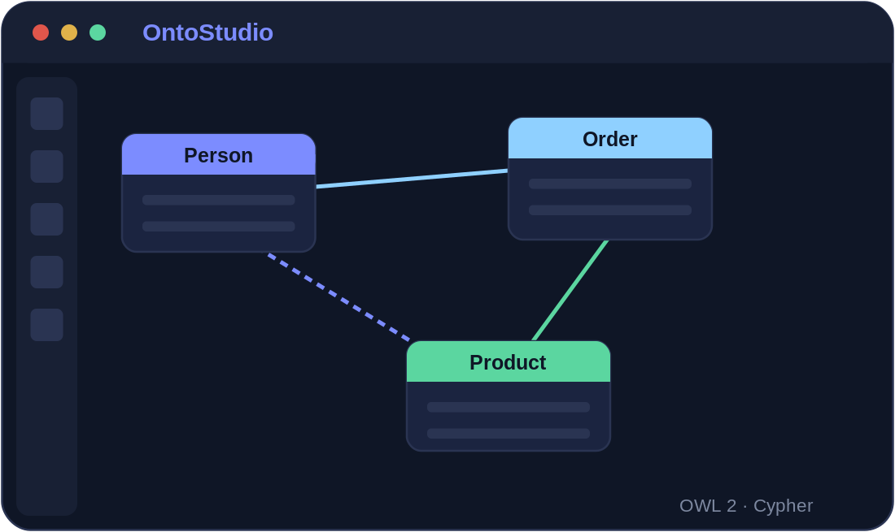
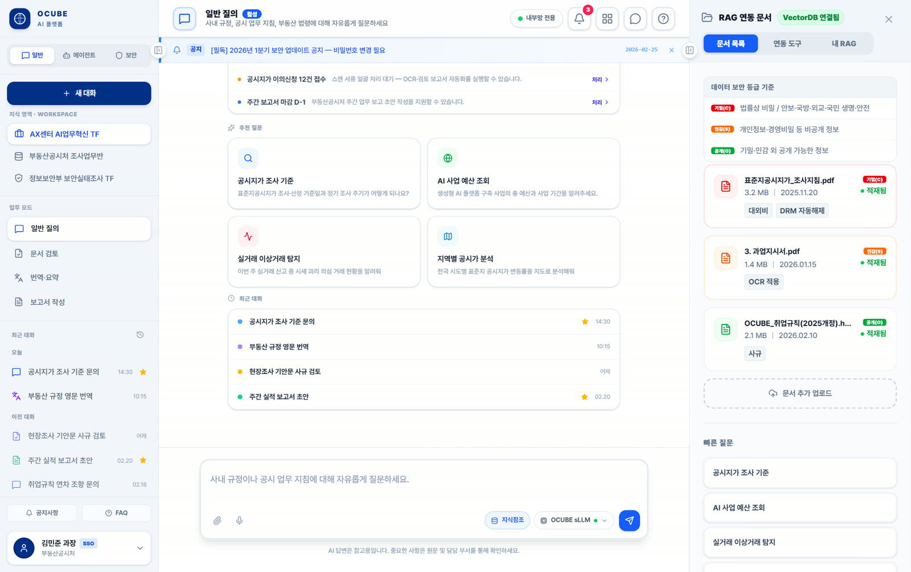

01
Object
설비·
설비 프로토콜부터 문서·

QData는 부서·

현장 소스를 연결하고 품질을 확인한 뒤, 공통 의미로 정리해 분석과 에이전트가 사용할 수 있게 제공합니다.
OPC-UA·

소스·어댑터 관리 — 개념 예시 화면(실제 UI 아님)
설비마다 다른 태그와 코드를 온톨로지로 정규화합니다. 문서·
지식 관리 콘솔 — 프로토타입 예시 화면
문서·

지식 검색 — 프로토타입 예시 화면
데이터가 흐르는 네 단계 — 각 단계의 품질이 다음 AI 결과의 신뢰도를 좌우합니다.
OPC-UA·
중복 제거·
공통 스키마·
지도·
원본 데이터를 정제하고 공통 형식으로 표준화한 뒤 활용 시스템에 제공합니다. 앞 단계의 데이터 품질이 이후 분석과 AI 결과의 신뢰도를 좌우합니다.
서로 다른 프로토콜과 데이터 형식은 연결 모듈에서 맞추고, 새 설비는 커넥터를 추가해 확장합니다.
실시간 스트림과 배치 데이터를 동일한 어댑터 계층에서 수집하도록 구성합니다. (지원 프로토콜은 순차 확장)
QFactory와 QAgent는 QData가 통일한 형식과 의미를 기준으로 데이터를 조회하고 판단합니다.
상용 데이터 플랫폼의 온톨로지 상위계층·
설비·
설비·
온도·
설비-공정-제품의 관계를 지식그래프로 연결
부서·
데이터 자산을 검색·
원본→표준까지 데이터 계보를 추적
결측·
표준 데이터셋을 실시간 질의 API로 제공
데이터 플랫폼은 끝이 아니라 시작입니다. 표준화된 데이터는 곧바로 예측 모델과 에이전트가 학습·
수집·
표와 도면이 섞인 현장 문서를 구조 단위로 해석하고, 이미지와 음성을 텍스트로 전환해 정형 데이터와 같은 층에서 다룹니다.
용어와 단위를 표준화하는 데서 그치지 않고, 설비·
데이터 품질과 모델 성능을 함께 살피고, 변화가 감지되면 모델을 다시 학습·
| 항목 | QData 산업 데이터 플랫폼 |
|---|---|
| 입력 소스 | PLC · 센서 · SCADA · MES · ERP · Historian · 시계열 데이터베이스 · 문서 |
| 수집 프로토콜 | OPC-UA · MQTT · Modbus · REST/API (실시간 스트림 + 배치) |
| 표준화 방식 | 공통 스키마 매핑 · 온톨로지 기반 의미 표준화 · 품질검증 · 결측 보정 |
| 데이터 관리 | 데이터 카탈로그 · 계보 추적 · 품질 규칙 · 접근제어 (프로젝트별 구성) |
| 제공 방식 | 지도(GIS)· |
| 배포 | 클라우드 · 온프레미스 · 폐쇄망(에어갭) |

산업 데이터 상호운용 표준과 데이터 관리 관행을 참조해 설계합니다.
데이터 반출 정책과 보안 등급에 따라 배포 형태를 선택할 수 있도록 설계합니다.
빠른 구축과 확장. 표준화 파이프라인을 관리형으로 운영하며 상용 데이터 서비스와 연계.
사내 서버에서 민감 공정 데이터를 외부로 내보내지 않고 표준화해 내부 시스템에 제공합니다.
망분리 환경에서 데이터를 외부로 반출하지 않고 현장 내부에서 수집·
데이터 반출 정책과 보안 등급에 맞는 클라우드·
축적된 산업 현장 경험을 바탕으로, 데이터 통합·
분산된 공정 데이터를 통합해 예지보전·
충전 인프라의 상태·
영상·
데이터 형식과 보관 위치가 제각각이어서 분석이나 AI 도입을 시작하기 어려운 조직에 적합합니다.
설비·
제어망의 설비 데이터와 업무망의 MES·
작업표준서·
PoC(도입 전 효과를 확인하는 사전 검증) 때마다 데이터 수집·
외부 반출이 불가능한 데이터를 내부에 둔 채로 표준화와 AI 활용 기반을 갖춰야 하는 공공·